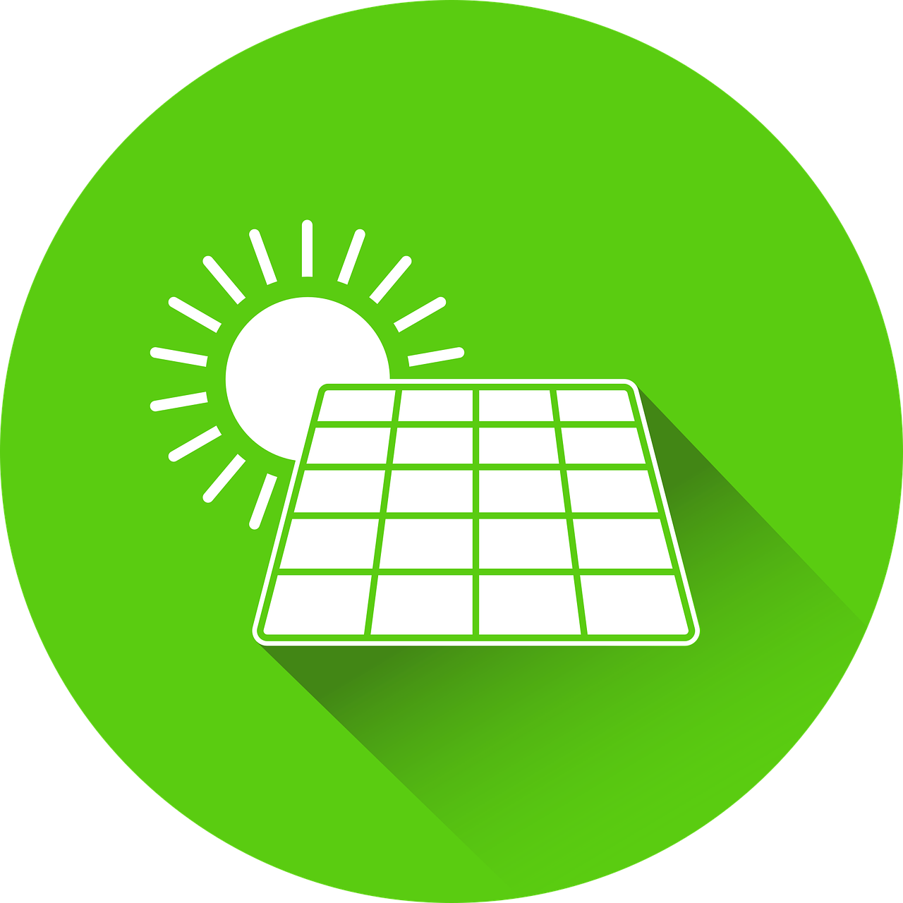

Seja bem-vindo ao nosso site dedicado a explorar o maravilhoso mundo da energia limpa e sua importância para o futuro sustentável. A energia limpa é a chave para reduzir nossa pegada de carbono e alcançar a ODS 7, garantindo que todos tenham acesso a uma fonte de energia confiável e sustentável.

Benefícios da Energia Limpa
A energia limpa traz uma série de benefícios para o nosso planeta e sociedade. Além de reduzir as emissões de gases de efeito estufa, ela impulsiona a criação de empregos sustentáveis, reduz custos a longo prazo e protege os ecossistemas naturais. Ao adotar fontes de energia limpa, estamos investindo em um futuro mais limpo e próspero.
Ações para Promover a Energia Limpa
Para alcançar a ODS 7 e promover a energia limpa, existem várias ações que todos nós podemos tomar. Desde instalar painéis solares em nossas casas até apoiar políticas governamentais favoráveis à energia limpa, cada passo conta. Vamos explorar estudos de caso inspiradores de projetos de sucesso ao redor do mundo.